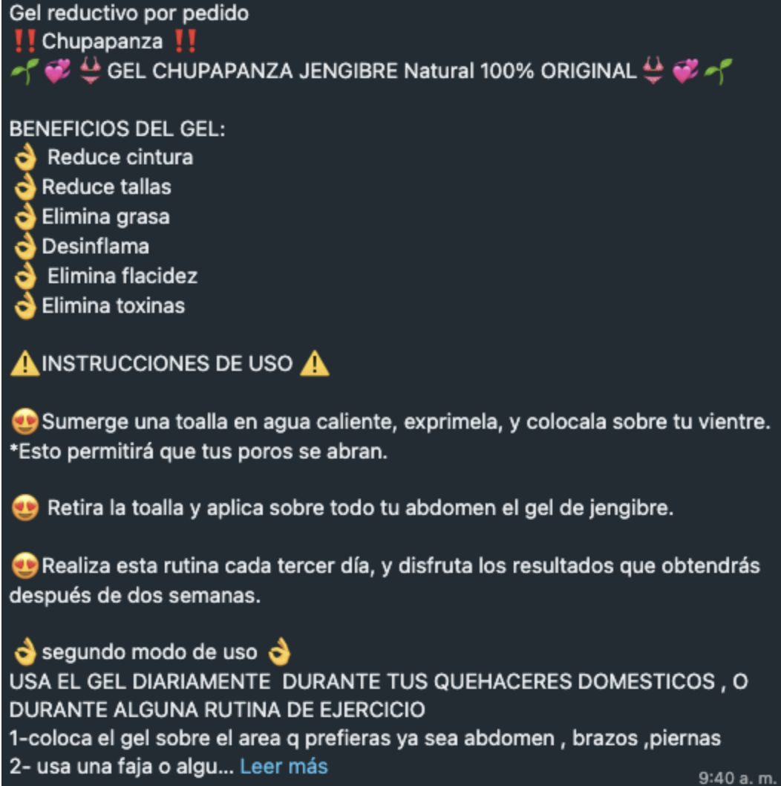

Ana Cristina Castellanos y Montserrat Nosti
Chupapanza, Shupanza o Chupa Panza. No importa mucho cómo se escriba o en qué presentación sea (gel, pastillas, té, malteada), se entiende la idea. Emmanuel Zúñiga Sánchez, dueño de esta marca, lo promociona en sus redes sociales como el producto que le permite comerse unas carnitas sin culpa. Dice la etiqueta: “Eficaz en la quema de grasa, reduce tallas, elimina vientre abultado, flacidez, estrías, post parto”.
Durante la pandemia, Chupapanza se volvió el producto estrella de tiendas naturistas y grupos de Facebook. Se recomendaba su consumo por parte de nutriólogos hasta que, en agosto de 2022, la Comisión Federal para la Protección contra Riesgos Sanitarios (COFEPRIS) sacó una alerta sanitaria prohibiendo la venta de estos productos, considerados por la autoridad como publicidad engañosa. A pesar de esto, el Chupapanza ha encontrado formas de continuar en el mercado.
La COFEPRIS advirtió a la población sobre la utilización en estos productos de elementos no autorizados para la fabricación de suplementos alimenticios, como jengibre, naranjo y cúrcuma. Además, destacaron la presencia de bamitol, un medicamento para desinflamación en vacas, en el gel. Emmanuel Zúñiga mantiene a la fecha que esta alerta no tuvo razón de ser y que los productos incluídos en el comunicado no son los originales, a pesar de que tanto Chupa Panza, como Shupanza y Chupapanza están registrados ante el IMPI bajo su nombre.
El dueño del 99% de las acciones de Chupapanza es el mismo que encabeza la Federación Mexicana de la Industria Herbolaria y Medicina Alternativa, Tradicional y Naturista (FNIHMTANAC), en la que se defienden los derechos de la medicina tradicional en México. En 2019, en un foro de colaboración con la UNAM, Emmanuel Zúñiga habló sobre la creación de esta federación: “En su momento fuimos tachados de ser productos milagro, pero ya no estamos en ese molde porque fuimos avanzando, día con día, en demostrar la seguridad y la eficacia de los productos y servicios que aportamos”.
¿Qué es el Chupapanza?
Desde 2014, el Instituto Mexicano de Propiedad Intelectual (IMPI) tiene registro de que la empresa llamada Miel Salud y Vida sacó a la venta los productos Chupapanza, suplementos “naturistas” que favorecen la quema de grasa, la pérdida de peso y de talla. En 2020, los derechos de la marca se cedieron a nombre de Emmanuel Zúñiga Sánchez. Un año más tarde, esta persona registró también los nombres Shupanza y Chupa Panza en el IMPI.
El té es a raíz de jengibre con pulpa de fruto de piña, semilla de linaza y corteza de ramas de canela. Estos ingredientes tienen el común denominador de ser diuréticos, entonces lo que hacen es facilitar la eliminación de líquidos, dando la sensación de que se chupa la panza.
“En realidad, entre el 60-65% de nuestro peso es agua, entonces su efecto es inmediato; pero es a partir de sustancias que eliminan agua”, menciona Verónica Prieto, nutrióloga por la UAM, especializada en trastornos de la alimentación.
Prieto remarca que natural no es sinónimo de saludable. Explica que el abuso de estos complementos alimenticios puede ocasionar que nuestro intestino no sea capaz de absorber nutrientes y eso ocasiona irritación intestinal y deshidratación por exceso de evacuaciones. Esto se puede traducir en una pérdida de peso, que sería más bien una descompensación.
“El intestino delgado tiene unas vellosidades, que por ahí se van a absorber todos los nutrientes de lo que nosotros hayamos comido. ¿Qué pasa cuando hay un abuso de este tipo de sustancias? No se van a absorber los nutrientes”, comenta.
Ana trabaja pintando uñas. Una clienta le vendió el producto. “Le dije: ‘¿qué te pasó?, bajaste un buen de peso, ¿estás a dieta?’ Y me dijo, ‘yo vendo este Chupapanza y sí sirve’”. Ana probó el producto en una ocasión, siguiendo las instrucciones de su amiga: se untó el gel, se envolvió en plástico y realizó su rutina de 20 minutos de ejercicio.
Bamitol
El comunicado de la COFEPRIS alertando sobre el Chupapanza hacía especial énfasis en una sustancia: bamitol. Este medicamento, a pesar de que es de venta libre, no está aprobado para su uso en humanos. El bote que comercializa Bayer contiene una leyenda que dice “especies destino: bovinos, equinos, ovinos y caprinos”. El bamitol suele ser utilizado en vacas, especialmente para inflamaciones después del parto. Verónica Prieto menciona que esta sustancia, además de absorber agua, tensa la piel y es por eso que puede dar la sensación de que reduce la flacidez.
“Este medicamento es de uso veterinario, es un desinflamante, es un anti bactericida y le ayuda a la piel de la vaca”, comenta Prieto. Además, menciona que en algunos casos se usa para deportistas, pero en dosis muy controladas.
Dentro de la comunidad queer se utiliza el bamitol para disminuir el tamaño del busto, pero en algunos blogs se menciona que puede ocasionar problemas para la salud.
Emmanuel Zúñiga declara que esta es una sustancia química con acción farmacológica, pero que los productos originales no la contienen. A pesar de que la lista de ingredientes del gel no incluye esta sustancia, en el envase viene escrito que contiene “bamintol”.
Una larga historia de tensiones: COFEPRIS y Emmanuel Zúñiga
El comunicado de la COFEPRIS advirtiendo sobre el uso de Chupapanza ha sido la última gota de una serie de tensiones entre Zúñiga y la instancia encargada de la regulación de los riesgos sanitarios.
Desde 2015, Zúñiga encabezó huelgas a favor de la medicina tradicional. En 2017, a raíz de un operativo ejecutado por la Procuraduría Federal del Consumidor (PROFECO) y la COFEPRIS, hubo una decomisación masiva de “productos milagro”. El presidente y fundador de la FNIHMTANAC, a la que están afiliados alrededor de 50 mil empresas y establecimientos en todo México, se pronunció en desacuerdo con los criterios y procesos llevados por ambas dependencias del Gobierno, argumentando que los productos que él comercializaba no pertenecían a la categoría “milagro”, sino a la medicina tradicional.
Un mes después del operativo, la COFEPRIS emitió un comunicado en el que justificaron la suspensión de actividades en establecimientos que comercializaban y fabricaban productos irregulares que ponían en riesgo la salud de la población.
En mayo de 2016, la tensión se reanudó a raíz de un proyecto de modificación a la Ley General de Salud, en los artículos 215 y 216, relativos a suplementos alimenticios. Se hacía una definición de suplementos alimenticios como aquellas sustancias que tienen como objetivo: “complementar o incrementar la dieta”. Además, se prohibía para estos productos la publicidad de propiedades fisiológicas, “a menos que éstas se encuentren debidamente aprobadas por la Comisión”.
Al respecto, Verónica Prieto menciona que la utilización de la palabra “suplemento alimenticio” puede ser engañosa. “Alimento es algo saludable, que se puede llevar a la boca y no me va a pasar nada. El hecho de que esté en la naturaleza no quiere decir que nosotros los humanos los podamos consumir y que puedan ser benéficos para nuestra salud”, comenta.
En 2017, el proyecto de Ley fue aprobado en la Cámara de Diputados y el nombre de Emmanuel Zúñiga comenzó a aparecer en notas de diarios nacionales. Hablaba sobre los esfuerzos por desaparecer la medicina tradicional en México y en el mundo para beneficiar finalmente a los grandes monopolios farmacéuticos. En octubre de ese mismo año Emmanuel Zúñiga Sánchez creó la empresa legal Herbolaria Saludable, encargada de la producción de Chupapanza.
En 2018 las cosas se estabilizaron, al menos en apariencia. La COFEPRIS y la Federación Nacional de Medicina Tradicional y Herbolaria firmaron un convenio de colaboración, que tenía como objetivo “establecer las acciones necesarias para contar con la regulación sanitaria que norme a los productos y plantas utilizadas por este sector así como mejorar y actualizar los procesos técnicos y de capacitación continua”. Sin embargo, esta dependencia respondió a una solicitud de información sobre el acuerdo con “información inexistente”.Zúñiga menciona que este acuerdo tenía como objetivo fomentar la medicina tradicional, en el que se había acordado la liberación de 461 plantas que se habían prohibido.
En el Foro en que se firmó el Acuerdo, dentro de San Lázaro, Emmanuel Zúñiga tomó la palabra para hablar de una lucha que había comenzado seis años atrás. “Tuvimos que reaccionar tomando la COFEPRIS, pidiendo diálogos, venimos a la cámara a manifestarnos, en las pasadas legislaturas metimos iniciativas de ley, y encontramos un punto de acuerdo”. Finalizó hablando de un día histórico, en el que por fin se ponían de acuerdo con las autoridades para ayudar al bien común.
En 2020, la empresa Miel Salud y Vida cedió los derechos de la marca Chupapanza a Emmanuel Zúñiga, quien unos meses después creó una empresa con ese nombre y otras dos: Laboratorios Dragon King S.A. de C.V. y Envases y Plásticos King S.A. de C.V. Los productos se vendían por paquetes en Facebook, donde además se lanzaban retos a la comunidad sobre la utilización del producto. El perfil de Facebook de Chupapanza se mantiene abierto hasta la fecha, así como las publicaciones de Herbolaria Tradicional sobre el producto.
En 2022, la tensión entre este empresario y la COFEPRIS se reanudó cuando se emitieron alertas contra tres productos comercializados por su empresa. “Chupapanza”, “Ortiga Ajo Más Rey” y “Me Vale Madre”. En relación al primero, se decía que al producto se le otorgan cualidades erróneas. Según información de la COFEPRIS, desde agosto a noviembre de 2022, se han realizado 70 visitas a establecimientos con giro de suplementos alimenticios. Además, han solicitado la suspensión de 531 publicaciones referentes a publicidad de estos productos. Sin embargo, su venta continúa en establecimientos físicos y sitios web.
Herbolaria tradicional en México
La herbolaria en México viene de una tradición que se remonta a tiempos prehispánicos. Es por eso que su continuidad se encuentra establecida en la Constitución como un derecho de los pueblos indígenas.
Roberto Campos, antropólogo de la UNAM, menciona que el primer antecedente de registro de la herbolaria medicinal en México es el Códice de la Cruz Badiano del siglo XVI. Sin embargo, fue hasta el siglo XIX que se empezaron a hacer estudios sobre plantas medicinales por parte del ya desaparecido Instituto Médico Nacional.
Guillermo Alfaro, académico de la Universidad Iberoamericana enfocado en pueblos indígenas de México, menciona que el conocimiento tradicional viene de la experiencia, pero que a raíz de que se estructuraron los conocimientos en un método científico, este se fue dejando de lado. “El caso más claro es la herbolaria, que es el conocimiento de todo lo que hay en la naturaleza, en particular de los vegetales, aunque también hay quien incorpora cosas de origen animal, que estudia sus efectos terapéuticos”, comenta. Sin embargo, advierte que en ocasiones, estos términos son apropiados para comercializar productos que no necesariamente son benéficos para la salud.
Campos coincide en que hay que diferenciar los productos herbolarios en estado puro de aquellos que han sido transformados. “Tenemos que tomarlo con cuidado y se deben de tener las investigaciones que respalden el uso que se debe de dar a las plantas medicinales y tener cuidado con estos productos llamados milagrosos”.
Ventas que continúan
El Chupapanza ha continuado vendiéndose en sitios de internet. Búsquedas en Mercado Libre y en tiendas naturistas como Linio arrojan resultados de tés y geles que se entregan en la Ciudad de México en menos de dos días. En otros sitios, como Amazon, la venta del producto está limitada a Estados Unidos, a pesar de que el comunicado de la COFEPRIS prohíbe su venta tanto nacional como internacional. Por su parte, las vendedoras de estos productos no han detenido sus negocios por Whatsapp y continúan vendiéndolo como un producto que reduce cintura, tallas, grasa, desinflama, elimina flacidez y toxinas.
El Chupapanza es un ejemplo de las complicaciones en la regulación de suplementos y medicina tradicional. Antonio Cervantes Guerrero ha tenido experiencia en el registro de remedios herbolarios y suplementos alimenticios. Para los primeros, dice se trata de un proceso que incluye análisis de materias primas, análisis taxonómicos de las plantas, pruebas de laboratorios de resistencia en el tiempo para demostrar la caducidad, y una referencia a la Farmacopea, un libro que tiene como objetivo regular las plantas que son utilizadas para temas relacionados a la salud, justificando el proceso de elaboración. Sin embargo, cuando se trata de suplementos alimenticios, el trámite únicamente implica un aviso de que se está llevando a cabo la producción. El Chupapanza se declaró como perteneciente a la segunda categoría. Esto le permite, en cierta forma, escapar a la regulación más extensa que existe para remedios herbolarios.
Verónica Prieto explica que uno de los problemas es que la venta de los suplementos se da antes de que la COFEPRIS compruebe que estos no son dañinos para la salud. Esa ventana de oportunidad permite que se puedan comercializar de nuevo, al ser prohibidos, con un cambio de nombre.
El mismo Emmanuel Zúñiga declaraba en un Foro de colaboración con la Universidad Nacional Autónoma de México (UNAM) que “existe más riesgo en que no esté regulada nuestra práctica desde la industria y los practicantes en la salud, a que tengamos un aval científico y estemos debidamente regulados”.
La calle Circunvalación, entre República de Uruguay y República del Salvador, es la sede de tiendas naturistas en la Ciudad de México. En un espectacular que está sobre una de las tiendas más grandes, en la que hay fila para pasar a mostrador, está la imagen del té Chupapanza. En la entrada, se encuentra una mujer con una charola llena de productos, en la que promociona, entre otros, unos tés llamados Chupa Grass, producidos por la misma empresa que el Chupa Panza.
En un recorrido por tiendas naturistas de la zona, en medio de la Merced, todavía puede encontrarse el producto. Siete establecimientos venden el té en precios que varían de los 60 a los 90 pesos. En otros, al preguntar por el Chupa Panza, se ofrecen productos alternativos. Jengibrim, un té de la misma empresa que produce el Chupapanza, cuenta con exactamente los mismos ingredientes. En otros locales se ofertan productos con variaciones como Xiupa Panxa, Chupa Grasa y ChupaKilos, como las versiones “mejoradas”.
El 8 de octubre, casi dos meses después de la publicación de la alerta, Emmanuel Zúñiga subió a su perfil de Facebook una foto en la que aparece él con una camiseta del producto, sugiriendo en los comentarios que el Reto Chupapanza iba a volver a abrirse pronto.
“Incluso estamos trabajando la vía legal del amparo porque, para comenzar, las categorías en las que tenemos la marca de Chupapanza, que es cosméticos, tés o infusiones, alimentos y suplementos, no fueron tomadas en cuenta”, concluye Zúñiga.